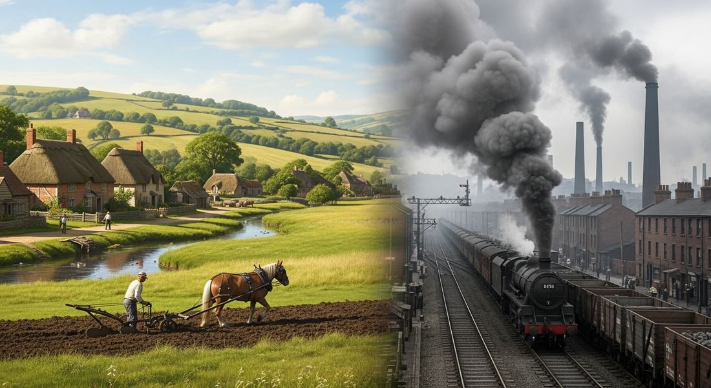

5.10 Continuity and Change in the Industrial Age
- LO-A: What changed (evidence of significant change): Economic system: from mercantilism and agriculture to industrial capitalism and free trade. Social structure: new middle and working classes. Technology: steam power → fossil fuels → electricity; railroads, steamships, telegraph. Political landscape: republics, constitutions, nationalism, labor parties, socialist ideas. Living standards: cheaper goods, longer life expectancy in industrialized countries by 1900. Global trade: expanded enormously, connected the world as never before. The pace of change itself accelerated, more changed in 1750–1900 than in any previous 150-year period. The AP exam's argumentation skill asks you to evaluate the extent of change, not just describe what changed, but make a claim about how much changed and what stayed the same. For Unit 5, the question is: how much did industrialization change the world by 1900? The answer requires weighing significant changes (new economic system, new classes, new technology, new political ideas) against significant continuities (inequality persisted in new forms, most of the world was still agrarian, women's subordination continued, political authority remained concentrated). What stayed the same (evidence of continuity): Inequality: new forms replaced old ones (landed aristocracy → industrial capitalists). Most of humanity: still lived in agrarian societies outside the industrializing West. Women's rights: still denied in most industrialized countries in 1900 (US women's suffrage 1920, UK 1918–1928). Political authority: monarchies still governed Germany, Russia, Austria-Hungary, China, the Ottoman Empire. The gap between rich and poor: grew within industrialized countries and between industrialized and non-industrialized regions. Key continuity for the exam: industrialization reshaped who was on top, but inequality itself, between classes, between nations, between genders, persisted.
Try each question before revealing the answer.
1. A historian argues that industrialization was "the most significant rupture in human history since the Neolithic Revolution." What evidence would support this claim?
2. A different historian argues that industrialization produced "change within continuity, new forms of the same old inequalities." What evidence would support this more skeptical view?
3. The period 1750–1900 saw both the spread of Enlightenment ideas about human equality and rights AND the expansion of European empires over non-Western peoples. How does this contradiction affect your assessment of how much the world changed?
4. In 1750, China and India together produced about half of all global manufactured goods. By 1900, Britain, the United States, and Germany together produced more than half. How does this shift affect your assessment of how much the world changed?
5. The AP exam uses the skill of "argumentation", making a defensible claim and supporting it with evidence. Why is it important to acknowledge what DIDN'T change, even in an essay arguing that industrialization produced great change?
- Explain the extent to which industrialization brought change from 1750 to 1900.
Tap a term for its definition.
-
Definition: The 19th-century widening of economic and industrial capacity between Western industrialized nations and the rest of the world, including the decline of Asian manufacturing share and the rise of European/American economic dominance. AP relevance: Key evidence of change at the global scale; the most dramatic single economic shift of the period.
-
Definition: An economic system in which factory owners (capitalists) invest in machinery and hire wage laborers to produce goods for sale in competitive markets; profit is reinvested to expand production. Significance: The CED identifies industrial capitalism as the central economic development of Unit 5; it created new class structures, changed living standards, and drove European imperialism.
-
Definition: Industrial wage workers who owned no means of production and sold their labor for wages; the class created by factory industrialization, distinct from craft artisans or agricultural laborers. Significance: The CED requires analyzing how industrialization created new social hierarchies; the working class became the basis for socialist and labor movements that reshaped 19th-century politics.
-
Definition: The systematic removal of raw materials (cotton, rubber, coal, metals, food crops) from colonized regions to supply industrializing European factories, creating economic dependency in the colonized world. Significance: Essential for explaining the Great Divergence. European industrial wealth was partly built on cheap colonial inputs, while colonies were kept as raw-material exporters rather than allowed to industrialize.
-
Definition: The strategy of selectively adopting Western industrial and military technologies to resist European imperialism, while preserving existing political and cultural structures; pursued by Japan (Meiji), Russia (Witte system), Egypt (Muhammad Ali), and the Ottoman Empire (Tanzimat). Significance: Key comparison point for 5.10: some non-Western states succeeded (Japan), others failed (Egypt, Ottomans), why? The CED asks students to analyze the extent of change industrialization produced globally.
-
Definition: The mass migration of people from rural areas to cities driven by factory employment; industrializing Britain went from 20% urban (1800) to over 50% urban (1850), the first country in history to be majority urban. Significance: The CED explicitly mentions urbanization as a major social change produced by industrialization; it created new public health crises, new class identities, and new political demands.
-
Definition: Free trade (Britain's policy after 1846) = removing tariffs to allow open global commerce, benefiting the most industrialized producer; Protectionism (US, Germany, Russia, Japan) = using tariffs to shield domestic industries from cheaper British competition during their development phase. Significance: The CED requires analysis of how industrialization spread; this policy debate explains why some nations industrialized successfully while others fell behind.
-
Definition: The widening gap in wealth, living standards, and industrialization between Western Europe/North America and the rest of the world during the 19th century, measured by income, manufacturing output, and life expectancy. Significance: The central CCOT outcome of Unit 5, industrialization increased wealth overall but distributed it very unequally, producing a world divided between industrial core and raw-material periphery that still shapes today's global economy.
📊 The Argumentation Skill: What Does "Extent" Mean?
This is the final topic in Unit 5, and the AP CED treats it differently from other topics. It is not primarily about new content. It is about developing the argumentation skill: the ability to make a precise, defensible claim about how much something changed.
When the AP exam asks "Evaluate the extent to which industrialization brought change from 1750 to 1900," it is asking you to do three things:
Neither the "great change" argument nor the "limited change" argument is inherently wrong. What matters is whether your evidence is accurate, your reasoning is logical, and your acknowledgment of the counterargument (continuity) is thoughtful.
✅ What Changed: The Evidence for Significant Change
The case for significant change in the period 1750–1900 is strong. Across multiple dimensions, the world of 1900 was radically different from the world of 1750:

The contrast between 1750 and 1900 was visible everywhere in industrialized countries, from the landscape (farms → factories) to the cityscape (small towns → metropolises) to the technologies of daily life (candles → electric lights) (Google Gemini, 2025), commercially licensed. The contrast between 1750 and 1900 was visible everywhere in industrialized countries, from the landscape (farms → factories) to the cityscape (small towns → metropolises) to the technologies of daily life (candles → electric lights) (Google Gemini, 2025), commercially licensed.
⏸️ What Stayed the Same: The Evidence for Continuity
The case for significant continuity is also strong. Despite all the changes above, much of the world in 1900 would have looked recognizable to a person from 1750:
- Inequality persisted in new forms: The landed aristocracy of 1750 was replaced by the industrial capitalist class of 1900, but the basic pattern of concentrated wealth and power at the top remained. The gap between the richest and the poorest in industrialized societies grew in the 19th century, even as average living standards rose. New elites replaced old ones; the structure of elite domination continued.
- Most of humanity remained agrarian: In 1900, most of the world's people, in China, India, sub-Saharan Africa, Latin America, Russia, still lived primarily in agricultural societies, working the land much as their ancestors had. The Industrial Revolution was, in 1900, still primarily a Western European, American, and Japanese phenomenon. The majority of humans were not yet living in industrial societies.
- Women's political exclusion continued: In 1900, women could not vote in most industrialized countries, the United States (1920), Britain (1918 partially, 1928 fully), France (1944), Japan (1945). Despite the women's rights movement that had been building since the 1790s, political equality for women was still decades away in 1900. The Enlightenment's promise of universal rights had not been extended to women.
- Monarchies still governed major powers: In 1900, Germany, Russia, Austria-Hungary, the Ottoman Empire, China, and Japan were all governed by emperors, tsars, or hereditary monarchs. Only France and the United States were functioning republics among major powers. Democracy was spreading but was not dominant.
- Global inequality between regions widened: The Great Divergence meant that the gap between industrialized and non-industrialized regions was greater in 1900 than in 1750. Industrialization produced new global hierarchies, industrialized nations dominated non-industrialized ones economically and increasingly politically (imperialism, Unit 6).
⚖️ Making the Argument: Putting It Together
Here is how to structure your thinking for any "evaluate the extent" prompt about Unit 5:
Step 1: Pick your position. Was industrialization's change great, significant, or limited? You don't have to agree with the majority view. A well-argued "limited extent" thesis can earn as many points as a "great extent" thesis, as long as it's supported.
Step 2: Identify your two strongest arguments for your position. These become your two body paragraphs. Example for "great extent": (1) economic transformation from mercantilism to industrial capitalism; (2) political transformation through Atlantic revolutions and new ideologies. Example for "significant but limited extent": (1) industrialization dramatically changed technology, economics, and social structure in the West; (2) continuity in global inequality, most of the world's population, and political exclusion of women limited the extent of change.
Step 3: Acknowledge the counterargument, and respond to it. This is the "complexity" requirement. If you argue for great change, acknowledge what stayed the same, and explain why this doesn't change your overall verdict. If you argue for limited change, acknowledge what did change and explain why you still consider the overall change limited.
Step 4: Connect to a broader context. The period 1750–1900 is Unit 5, but it connects to what comes before (Units 1–4: how did the pre-industrial world set up conditions for industrialization?) and what comes after (Unit 6: how did industrial power enable European imperialism?). Connecting your argument to these broader contexts shows sophisticated historical thinking.
These videos will help you review Continuity and Change in the Industrial Age and solidify key concepts before your exam.
- A) Industrialization produced dramatic increases in wealth in industrializing nations while non-industrializing nations saw little or no improvement
- B) Industrialization's benefits were broadly shared across the global economy
- C) India's failure to industrialize was primarily a result of poor governance rather than the effects of colonialism
- D) The gap between British and Indian per capita income in 1750 was primarily the result of geographic differences
- A) Industrialization had no effect on women's social and economic roles in the period 1750–1900
- B) The political changes of the period 1750–1900 were limited in extent because they consistently excluded women from formal political participation
- C) Enlightenment ideas about natural rights were completely irrelevant to actual political development in the period 1750–1900
- D) Women in industrialized countries had no access to formal education or professional employment by 1900
- A) The emergence of labor unions and socialist political parties in industrialized countries
- B) The abolition of slavery across the Atlantic world during the 19th century
- C) Statistics showing that income and wealth inequality within industrialized countries grew in the 19th century even as average living standards rose
- D) The growing literacy rates among working-class populations in industrialized countries
- A) The student overstates the extent of economic change, since mercantilism remained dominant in most countries
- B) The student should not mention continuity in an argument about the extent of change
- C) The student's argument would be stronger if it focused only on technological change rather than social and economic change
- D) The claim that "inequality and political exclusion were overcome by the end of the period" is historically inaccurate, both persisted in 1900
- A) That industrialization brought about change on a global scale by 1900
- B) That industrialization was the single most important development of the period 1750–1900
- C) That industrialization changed the economic systems of Western European countries
- D) That railroads and steamships increased global trade in the period 1750–1900
Answer all three parts (A, B, C).
Part A
Identify ONE specific piece of evidence that supports the argument that industrialization brought great change to the period 1750–1900.
Part B
Identify ONE specific piece of evidence that supports the argument that industrialization brought limited or qualified change to the period 1750–1900.
Part C
Explain how the changes of the period 1750–1900 (industrialization, political revolution, or new economic systems) contributed to the development of imperialism and colonial expansion in the same period.
This is a synthesis prompt, the goal is to draw evidence from across Unit 5 (and beyond) to make a supported argument. Write a complete thesis before revealing. Focus on selecting your strongest evidence for the quantifier you choose.